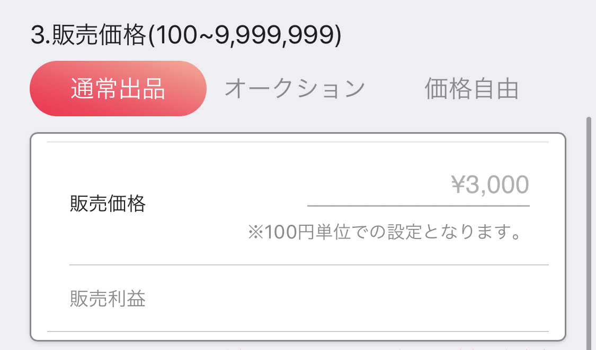
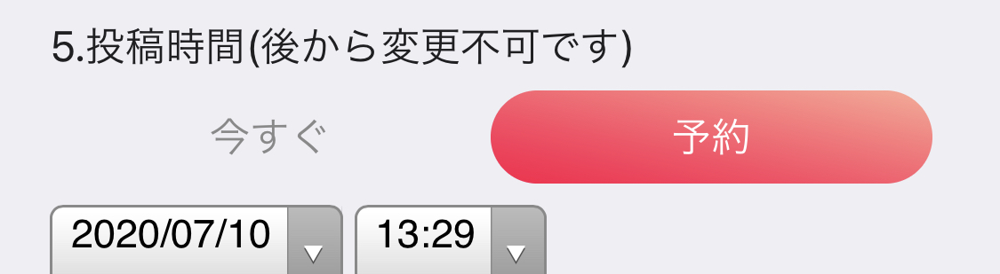
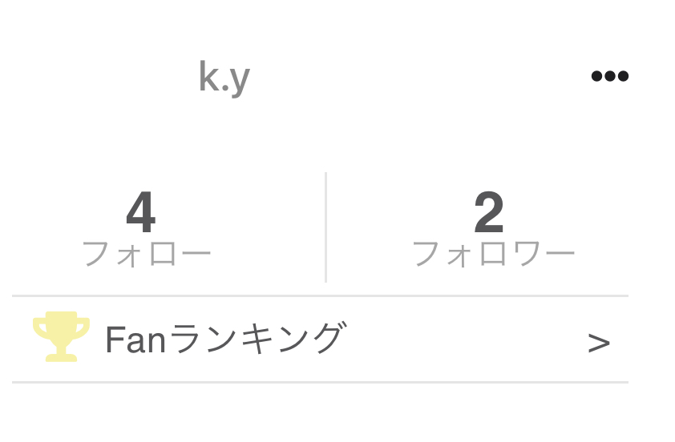
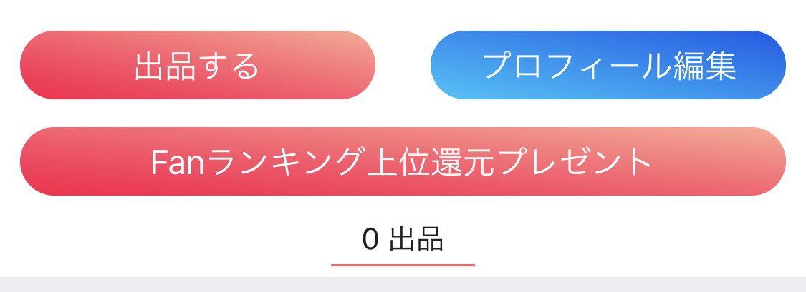

人気出品者様が取り組まれている出品方法を体系的にまとめたページです！ぜひご参考にしてください！
1.販売形式を組み合わせよう2.あなたに合った値段を設定しよう
3.出品頻度に注意しよう
4.在庫数は少ない方がよい？
5.開始時間をファンに告知しよう！
6.人気の商品シチュエーション！
7.Fanランキング上位にプレゼントしよう
1.販売形式を組み合わせよう
Fanfunでは現在(7/10時点)、「通常出品」「オークション」「価格自由」から販売形式をお選び頂けます。
普通のフリーマーケット形式と同様で、出品者が値段や在庫などを決定する最もFanfunで出品数が多い形式です。
《オークション》
一回の取引で数万超えが期待できるオークション形式です（過去最高値は8万円、平均は1.5万円）。オークション期間に最も高額で入札したお客様が購入することができるお一人様限定出品です。
《価格自由》
価格をお客様に決めてもらえる形式です(最低額は1000円)。初めての出品などで価格を決めかねる際に最も多く使われる形式です。
《Point》
基本的に30秒以内の動画メッセージ、写真メッセージなどを「通常出品or価格自由」でいくつか出品し、
3分超えの動画メッセージ、特別な衣装、シチュエーションなど少し手の込んだ商品を「オークション」といった形で組み合わせると最も収益性が高く出ます！

《通常出品》普通のフリーマーケット形式と同様で、出品者が値段や在庫などを決定する最もFanfunで出品数が多い形式です。
《オークション》
一回の取引で数万超えが期待できるオークション形式です（過去最高値は8万円、平均は1.5万円）。オークション期間に最も高額で入札したお客様が購入することができるお一人様限定出品です。
《価格自由》
価格をお客様に決めてもらえる形式です(最低額は1000円)。初めての出品などで価格を決めかねる際に最も多く使われる形式です。
《Point》
基本的に30秒以内の動画メッセージ、写真メッセージなどを「通常出品or価格自由」でいくつか出品し、
3分超えの動画メッセージ、特別な衣装、シチュエーションなど少し手の込んだ商品を「オークション」といった形で組み合わせると最も収益性が高く出ます！
2.あなたに合った値段を設定しよう
通常出品時の価格参考として、例を多く挙げさせていただきます！
《チャンネル登録3~5万のYouTuber》
・メッセージ動画：5000~10000円
・メッセージ付フォト：3000円前後
《フォロワー数千人のアイドル(アーティスト)》
・メッセージ動画：5000~10000円
・メッセージ付フォト：3000円前後
《フォロワー1000~3000人のLIVER》
・メッセージ動画：3000~5000円
・メッセージ付フォト：1000~2000円
などなど…
《チャンネル登録3~5万のYouTuber》
・メッセージ動画：5000~10000円
・メッセージ付フォト：3000円前後
《フォロワー数千人のアイドル(アーティスト)》
・メッセージ動画：5000~10000円
・メッセージ付フォト：3000円前後
《フォロワー1000~3000人のLIVER》
・メッセージ動画：3000~5000円
・メッセージ付フォト：1000~2000円
などなど…
3.出品頻度に注意しよう
《すぐに出品するのは…》
完売後、すぐに次の商品を出品するとプレミア感が薄れてしまい、購入できた人にもできなかった人にも「買うことができた！」という達成感を味って頂きにくくなります…。
そのため完売したとしてもすぐには次の商品を出すのは控えましょう！
《Point》
人気出品者様が最も多く取り組まれている出品頻度は
毎週決まった曜日に出品するなどといった「週一スタイル」です！ぜひご参考に！
完売後、すぐに次の商品を出品するとプレミア感が薄れてしまい、購入できた人にもできなかった人にも「買うことができた！」という達成感を味って頂きにくくなります…。
そのため完売したとしてもすぐには次の商品を出すのは控えましょう！
《Point》
人気出品者様が最も多く取り組まれている出品頻度は
毎週決まった曜日に出品するなどといった「週一スタイル」です！ぜひご参考に！
4.在庫数は少ない方がよい？

出品時に設定する在庫は多すぎるとプレミア感がなくなります！
過去に何度も即完売された実績がある場合は10個以上でも問題ございませんが、まずは1商品につき3~5個でスタートすることが良いでしょう！
5.開始時間をファンに告知しよう！

《人気出品者の出品流れ》基本的に、人気出品者さまは投稿時間を設定しております！
その際、近すぎる日時（今から1時間後など）は避けて、翌日以降に設定していることが多いです。
そして投稿予約が完了したら、TwitterやInstagramといったご自身が取り組んでいるSNSでファンの方にマイページのURLと一緒に宣伝しております！
(マイページのURL発行はマイページの右上の「…」から共有できます)

6.人気の商品シチュエーション！
よく売れる人気シチュエーションTOPを以下に記載します！
・おはよう、おやすみなどの添い寝シチュエーションメッセージ動画
・パジャマ、部屋着などの普段見れないオフショット
・告白セリフ系のシチュエーションメッセージ動画
・お客様の好きな歌を1番だけ（サビだけ）歌う動画
・コスプレ、水着などの特別衣装系フォト/動画
・出品者様のよく使う決め台詞（フレーズ）動画
・いつも見てくれている方へのお礼メッセージ動画
《Point》
シチュエーションはお客様に丸投げして決めてもらうことも出来ますが、人気出品者様の多くはご自身でシチュエーションを決定し、動画内で使用する呼び名や細かいセリフなどをお客様に任せたりしている方がほとんどです！
・おはよう、おやすみなどの添い寝シチュエーションメッセージ動画
・パジャマ、部屋着などの普段見れないオフショット
・告白セリフ系のシチュエーションメッセージ動画
・お客様の好きな歌を1番だけ（サビだけ）歌う動画
・コスプレ、水着などの特別衣装系フォト/動画
・出品者様のよく使う決め台詞（フレーズ）動画
・いつも見てくれている方へのお礼メッセージ動画
《Point》
シチュエーションはお客様に丸投げして決めてもらうことも出来ますが、人気出品者様の多くはご自身でシチュエーションを決定し、動画内で使用する呼び名や細かいセリフなどをお客様に任せたりしている方がほとんどです！
7 .Fanランキング上位にプレゼントしよう
《慣れてきたら…》
何度か出品を重ねたあとはこちらの「Fanランキング上位還元プレゼント」に取り組みましょう！
《Point》
人気出品者様は月に1回程度の頻度で行っております！
これによりファンの方に「Fanランキングに入ると特典がもらえる」と思ってもらいやすく次回の購入につながります！
(Fanランキングは購入金額、投げ銭額の合計により決定しております)
何度か出品を重ねたあとはこちらの「Fanランキング上位還元プレゼント」に取り組みましょう！

これは出品者様のFanランキング上位のファンの方に無料でプレゼントできる機能です！《Point》
人気出品者様は月に1回程度の頻度で行っております！
これによりファンの方に「Fanランキングに入ると特典がもらえる」と思ってもらいやすく次回の購入につながります！
(Fanランキングは購入金額、投げ銭額の合計により決定しております)